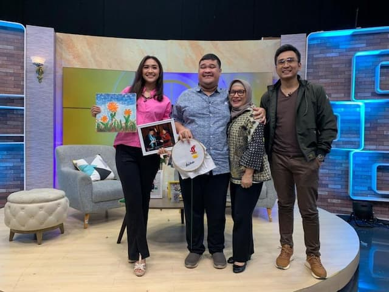

Dito, Anak dengan Spektrum Autisme yang Menginspirasi Lewat Inovasi

Profil
Dito adalah seorang anak dengan spektrum autisme yang membuktikan bahwa keterbatasan bukanlah penghalang untuk
berkarya dan berinovasi. Meski menghadapi tantangan dalam berkomunikasi dan berinteraksi sosial, Dito berhasil
menemukan passion di bidang teknologi dan pendidikan.
Bermula dari Tantangan, Berbuah Inovasi
Sejak kecil, Dito sering mengalami kesulitan dalam beradaptasi di lingkungan sekolah umum. Namun,
dukungan keluarga dan guru membuatnya terus bersemangat untuk belajar. Dito mulai tertarik pada komputer
dan aplikasi edukasi. Ia melihat banyak anak berkebutuhan khusus yang kesulitan mengakses materi pembelajaran
yang sesuai dengan kebutuhan mereka.
Dengan kegigihan dan rasa ingin membantu sesama, Dito mulai belajar membuat aplikasi sederhana.
Ia kemudian menciptakan aplikasi edukasi yang dirancang khusus untuk anak-anak berkebutuhan khusus,
seperti autisme, down syndrome, dan disleksia. Aplikasi ini berisi permainan edukatif, latihan motorik,
serta fitur pendukung komunikasi alternatif.
Penghargaan & Dampak Positif
Karya Dito mendapat apresiasi dari berbagai pihak, mulai dari komunitas orang tua anak berkebutuhan khusus,
sekolah inklusi, hingga pemerintah daerah. Aplikasinya telah digunakan di beberapa sekolah inklusi sebagai
alat bantu pembelajaran. Dito juga pernah diundang untuk berbagi kisah di seminar pendidikan inklusif,
membuktikan bahwa autisme bukanlah hambatan untuk berkontribusi positif bagi masyarakat.
Pesan Inspirasional
"Keterbatasan bukan alasan untuk berhenti bermimpi. Dengan semangat dan dukungan,
setiap anak bisa menjadi inspirasi bagi dunia."
Kisah Dito mengajarkan bahwa setiap anak, apapun kondisinya, memiliki potensi luar
biasa jika diberi kesempatan dan dukungan yang tepat. Inovasi Dito menjadi bukti bahwa
keterbatasan bukanlah akhir dari mimpi, melainkan awal dari perjuangan untuk mewujudkan
perubahan yang bermanfaat bagi banyak orang.